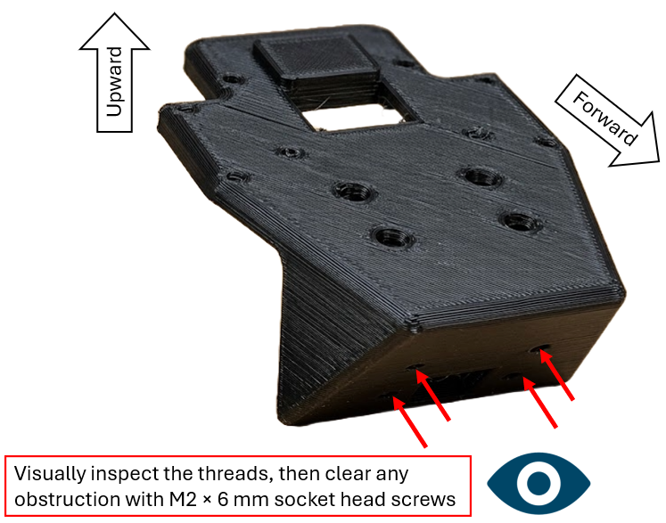
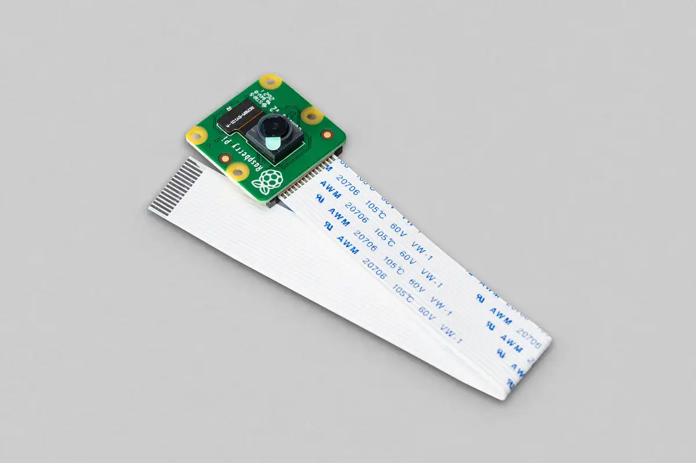
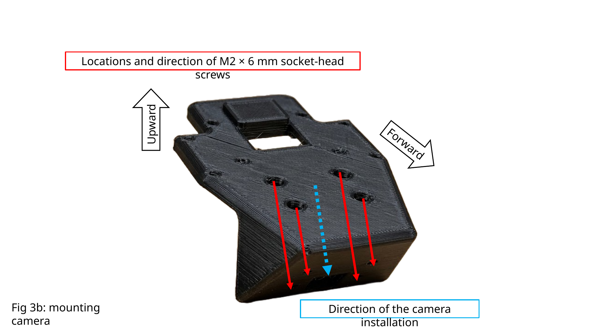

Task 3: Install Camera
Clear the printed holes, install the Raspberry Pi camera, and secure the camera ribbon cable.
Day 1No blockers
Task 3: Install Camera
Clear the printed holes, install the Raspberry Pi camera, and secure the camera ribbon cable.
Blockers
This task has no blockers. It can be started immediately.
None
Not marked complete
Parts required
- Raspberry Pi camera module
- 1.5-inch camera ribbon cable
- Camera/GPS mount from Task 2
- Fastener kit, subkit labeled GPS + Camera
- Four M2 × 6 mm socket-head screws
Tools required
- 1.5 mm Allen key
- Needle-nose pliers
Step 1. Clear the printed mounting holes
- Look straight down each of the four camera mounting holes as shown in Fig. 3a.
- Each hole must be completely clear. If printed plastic blocks a hole, thread one M2 × 6 mm socket-head screw into that hole from the outside of the mount.
- Drive the screw in only far enough to push the plastic out the back side.
- Back the screw completely out, then use the needle-nose pliers to remove any loose plastic still attached on the back side.
Inspection standard
Do not install the camera until all four holes are fully open.
Do not install the camera until all four holes are fully open.

Fig. 3a. Verify that each camera hole is fully clear before installing the camera.
Step 2. Prepare the camera
- Retrieve the camera.
- Surrender the lens adjustment tool to a faculty member.
- Gently release the black cable retainer on the camera.
- Remove the white ribbon cable from the camera and surrender it to a faculty member.

Camera module used in this task.
Step 3. Install the camera and ribbon cable
- Install the camera into the camera/GPS mount in the orientation shown in Fig. 3b.
- Make sure the black cable retainer faces the rear of the mount.
- Make sure the camera PCB sits flush against the plastic mount so the lens seats properly in the square front opening.
- Use the needle-nose pliers to hold each M2 × 6 mm screw in place while you start it with the 1.5 mm Allen key.
- It is usually easiest to start with one of the rear holes, then install the remaining screws in a crisscross pattern.
- Install the wide 15-pin end of the 1.5-inch camera cable into the camera, then gently close the retainer.
- The exposed metal contacts on the ribbon cable must face downward, away from the black plastic retainer.
Time-saving option
If time is limited, two screws installed on opposite corners are acceptable. Four screws are preferred when time allows.
If time is limited, two screws installed on opposite corners are acceptable. Four screws are preferred when time allows.

Fig. 3b. Use this figure to confirm camera orientation and screw direction.
Common errors
- Installing the camera before clearing all four holes.
- Reinstalling the surrendered white ribbon cable instead of the correct 1.5-inch cable.
- Orienting the camera so the cable retainer faces the wrong direction.
- Installing the ribbon cable backward so the contacts face the retainer instead of away from it.
- Using excessive force when seating the camera or tightening the screws.